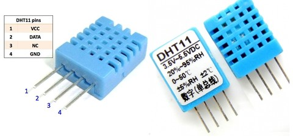
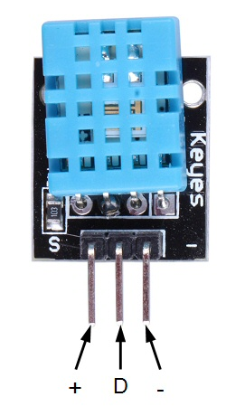

4. Sensor de temperatura i humitat DHT11¶
El sensor DHT11 és un sensor de temperatura digital i una humitat relativa de l’aire. Utilitzeu la comunicació digital amb Arduino, de manera que no és necessària aquesta connexió a un passador analògic per fer les lectures.
{kind=link}

Especificacions tècniques¶
- Tensió d'alimentació de 3 a 5 volts
- Corrent màxim d’alimentació 2,5 mA
- La humitat relativa oscil·la entre un 20% i un 80% amb un 5% de precisió
- La temperatura oscil·la entre 0 i 50 ºC amb una precisió de +2 ºC
- 1 mesura per segon
- Mida 15,5 mm x 12mm x 5,5 mm
- Connexió de 4 -Pin
Biblioteca Arduino¶
Esquema de connexió¶
{kind=link}

Exercicis¶
El programa següent envia la humitat relativa i la temperatura mesurada pel sensor DHT11.
Carregueu el programa a Arduino i mostra els valors del monitor de la sèrie.
1 2 3 4 5 6 7 8 9 10 11 12 13 14 15 16 17 18 19 20 21 22 23 24 25 26 27 28 29 30 31 32 33 34 35 36 37 38 39 40 41 42 43 44 45 46 47 48 49 50
// // Test de temperatura y humedad // #include <dht11.h> dht11 DHT11; #define DHT11PIN 4 void setup() { Serial.begin(57600); Serial.println("DHT11 TEST PROGRAM "); int chk = DHT11.read(DHT11PIN); pinMode(2, OUTPUT); digitalWrite(2, HIGH); } void loop() { delay(1000); // Lee sensor Serial.println("\n"); Serial.print("Leyendo sensor... "); int chk = DHT11.read(DHT11PIN); switch (chk) { case DHTLIB_OK: Serial.println("Correcto"); break; case DHTLIB_ERROR_CHECKSUM: Serial.println("Error de datos"); break; case DHTLIB_ERROR_TIMEOUT: Serial.println("Error de tiempo de espera"); break; default: Serial.println("Error desconocido"); break; } // Imprimir temperatura y humedad if (chk == DHTLIB_OK) { Serial.print("Humedad (%): "); Serial.println((float)DHT11.humidity, 1); Serial.print("Temperatura (C): "); Serial.println((float)DHT11.temperature, 1); } }
Modifiqueu el programa anterior per mostrar la mesura de la temperatura a la pantalla.
Modifiqueu el programa anterior per activar un LED vermell en cas de superar la temperatura ambient en 2 graus centígrads.
Comproveu el funcionament correcte escalfant el sensor. El LED vermell s’ha de mantenir en marxa fins i tot si la temperatura baixa de nou.
Modifiqueu el programa anterior per sonar un sonor quan la temperatura és alta. El timbre sonarà durant unes dècimes cada segon. Les instruccions que s'han d'utilitzar són les següents:
1 2 3
pc.buzzTone(1000); delay(20); pc.buzzTone(0);
El timbre deixarà de sonar quan la temperatura caigui de nou. Comproveu el funcionament correcte escalfant el sensor.
Modifiqueu el programa anterior per a un LED blau que s’encengui mentre la mesura de la temperatura es manté baixa.
El LED blau s’apagarà en cas que la temperatura mesurada superi la temperatura ambient actual més un grau.